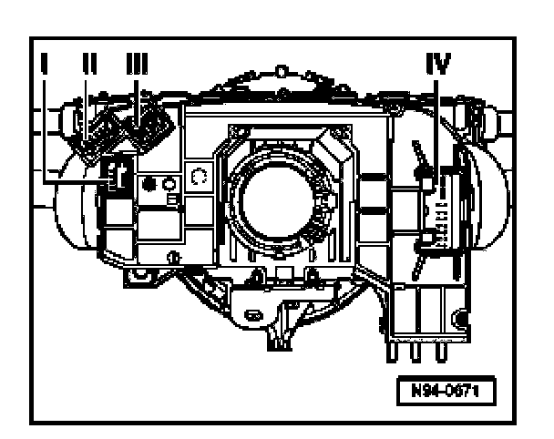
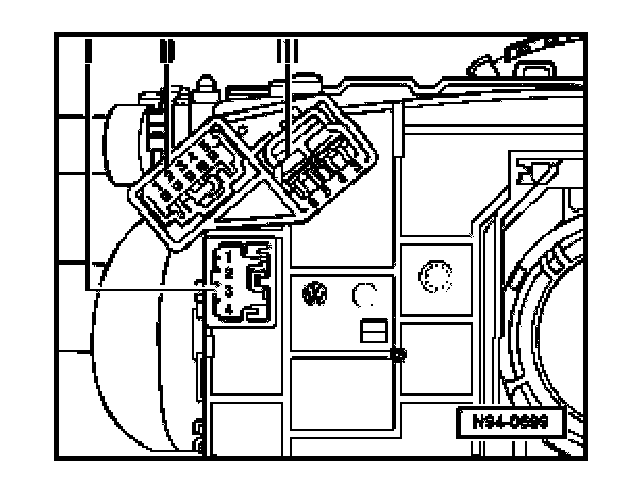
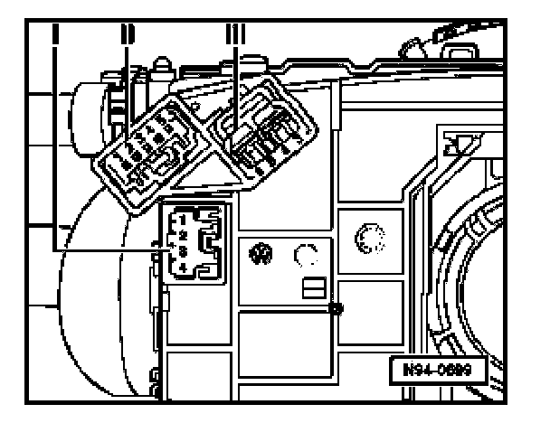
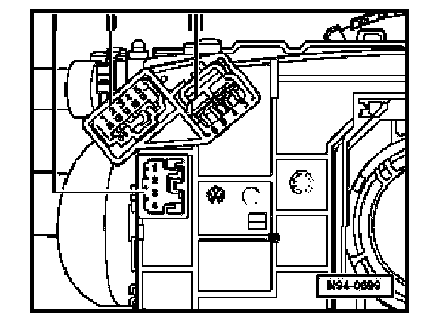
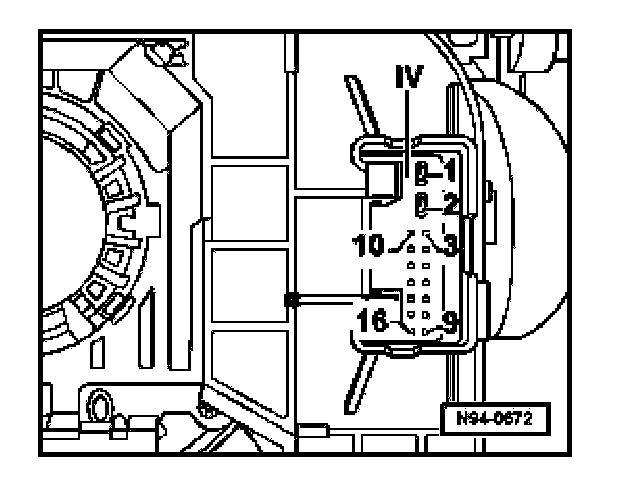

Connector Views
Steering Column Switches, Multi-pin Connector Assignments
Steering Column Switches, Multi-pin Connector Assignments:

I. Multi-pin connection -I- for easy entry function switch
II. Multi-pin connection -II- for Tiptronic switch
III. Multi-pin connection -III- for coil connector
IV. Multi-pin connection -IV- for voltage supply, CAN and terminal 15
I - 4-pin connector
I - 4-pin Connector:

1. On/off for easy entry
2. Direction selection
3. Terminal 31, negative
4. Open
II - 5-pin connector
II - 5-pin connector:

1. Open
2. Open
3. Open
4. Terminal 31 (Ground - (GND)
5. Tiptronic
III - 4-pin connector
III - 4-pin connector:

3. Spiral spring connection
4. Spiral spring connection
5. Spiral spring connection
6. Spiral spring connection
IV - 16-pin connector
IV - 16-pin connector:

1. Terminal 31 (Ground - (GND)
2. Terminal 30 B +, positive
3. Powertrain CAN Bus, shielding
4. Open
5. Cruise control switch position, off
6. Open
7. Open
8. Convenience CAN Bus, Low
9. Convenience CAN Bus, High
10. Powertrain CAN Bus, High
11. Powertrain CAN Bus, Low
12. Open
13. Terminal 15
14. Open
15. Open
16. Open